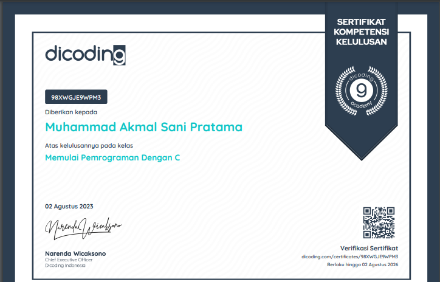

Perkenalan
Perkenalkan nama saya adalah Muhammad Akmal Sani Pratama. Saya adalah mahasiswa Universitas Negeri Sunan Kalijaga. Saya pernah bersekolah di SMA Negeri 2 Banguntapan dan SMP Negeri 1 Banguntapan. Hobi saya adalah mendengarkan musik.
Proyek
Berikut adalah proyek yang pernah saya buat
ASN Music Player adalah sebuah pemutar musik sederhana yang saya buat menggunakan wxwidgets dan bahasa pemrograman C++. Program ini menggunakan SDL mixer untuk output audio.
Simple Notepad adalah aplikasi text editor sederhana yang saya buat menggunakan wxwidgets dan bahasa pemrograman C++.
ASNImage adalah sebuah website sederhana yang saya buat menggunakan flask dan python. Website ini dapat mengubah sebuah foto menjadi ASCII
TamaCH adalah sebuah website chatroom sederhana yang saya buat menggunakan python dan django framework
Flying Bird adalah sebuah game berbasis SDL sederhana yang terinspirasi dengan game populer bernama "Flappy Bird". Game ini saya kembangkan menggunakan bahasa pemrograman C++.
Plane shooter adalah game tembak-tembakan sederhana berbasis SDL yang saya kembangkan menggunakan bahasa pemrograman C++
Video to ASCII adalah program sederhana yang dapat memutar video dalam bentuk ASCII art
Blog pribadi
Sertifikat
 Kontak
Email : tamaasn@yahoo.com